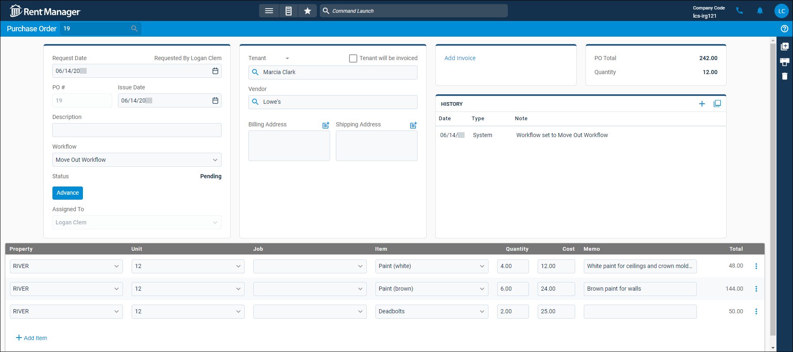
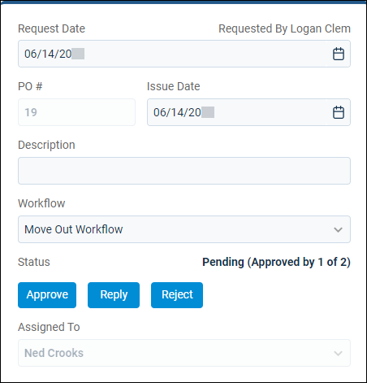
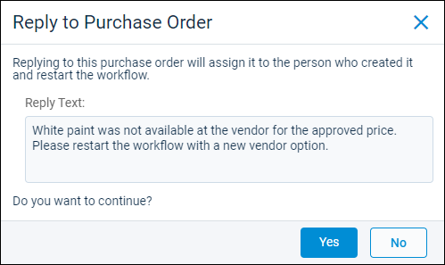
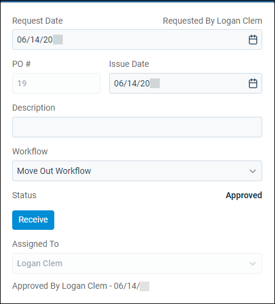
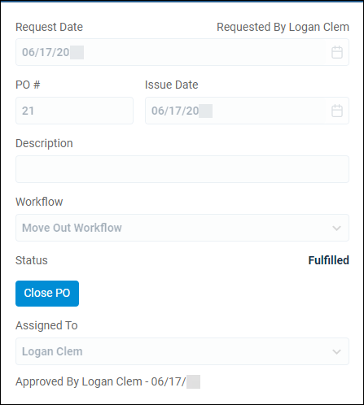

Source: https://rmxhelp.rentmanager.com/Topics/Express/KB/Purchase-Order-Workflow-Process.htm
Purchase Order Workflow Process
A purchase order (PO) workflow specifies a sequence of tasks to be performed in the review, approval, and fulfillment of purchase orders and the user(s) assigned to each sequential task in the workflow process. For each action in a purchase order workflow, users must take different actions to complete their assigned task and advance the workflow.
More Information
Workflow steps can be in different orders, depending on your needs. This topic outlines the common steps and how to progress the workflow through them, but not all workflows include all these steps in this order.
Related Privileges
| Group | Privilege | Column |
|---|---|---|
| POs/Estimates | Purchase orders | View |
For more information, refer to Control User Access.
Step 1: Start the Workflow
To start a purchase order workflow, the user who created the workflow must advance it to the next assigned user or user role. If a specific user account is responsible for the step, Rent Manager automatically assigns the step and notifies the user. If a user role is responsible for the step, the creator of the purchase order must choose a user with that role when advancing the workflow. Regardless of the steps in the workflow, the creator must always start it by advancing it to the first assigned user. To advance the workflow, the next user must have the appropriate privileges to complete their assigned action.
To start a purchase order workflow, do the following:
-
As the user who created the purchase order, go to
 arrow_forward Payables arrow_forward General arrow_forward Purchase Orders and select the purchase order.
arrow_forward Payables arrow_forward General arrow_forward Purchase Orders and select the purchase order.
-
In the Status field, click Advance.
The Advance Purchase Order pop-up displays. -
Click Yes.
The workflow is advanced and assigned to the first user.
Step 2: Approve the Purchase Order
Related Privileges
| Group | Privilege | Column |
|---|---|---|
| POs/Estimates | Approve purchase orders | Enabled |
For more information, refer to Control User Access.
Purchase order workflows can include up to three approval tiers that allow different users to approve purchases of different dollar amounts. During each of the approval stages, users can approve, reply to, or reject the purchase order. Each action is described below.

| Action | Description |
|---|---|
|
Approve |
Advance the workflow to the next user. |
|
Reply |
Send the purchase order back to the creator and write an explanation in the Reply Text field. The purchase order is returned to the first step in the workflow.
 |
|
Reject |
End the workflow and fully reject the purchase order request. |
Step 3: Review the Workflow
If there is a Review action in the workflow before the final Fulfill action, the workflow is assigned to the user to review the costs before moving it to the next step. To move the purchase order out of review status, do the following:
-
Go to the purchase order's details page.
-
In the Status field, click Advance.
The Advance Purchase Order pop-up displays. -
Click Yes.
The workflow is advanced and assigned to the next user assigned to an Approve or Fulfill action.
Step 4: Fulfill the Purchase Order
Related Privileges
| Group | Privilege | Column |
|---|---|---|
| POs/Estimates | Fulfill purchase orders | Enabled |
For more information, refer to Control User Access.
The final step before a purchase order workflow can be completed and closed is the Fulfill action.

To fulfill a workflow, do the following:
-
Go to the purchase order's details page.
-
In the Status field, click Receive.
The Fulfill Purchase Order pop-up displays. -
Click Yes.
The purchase order is fulfilled and sent back to the creator to close.
Step 5: Close the Purchase Order
After all other actions in the workflow are complete, the user who created the purchase order must close it.

To close a purchase order, do the following:
-
Go to the purchase order's details page.
-
In the Status field, click Close PO.
The Close Purchase Order pop-up displays. -
Click Yes.
The purchase order is fulfilled and sent back to the creator to close.
If you need to edit the purchase order after it is closed, you must reopen it. For more information, refer to Reopen a Purchase Order.